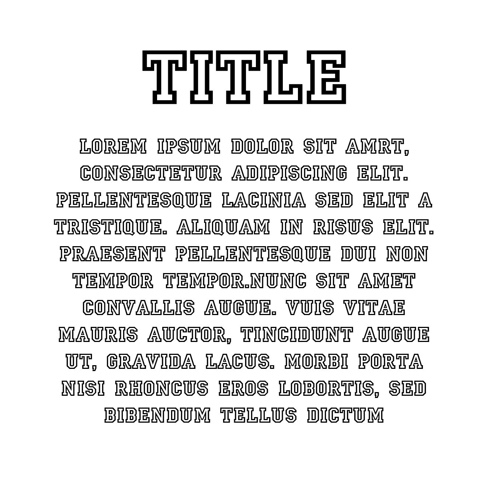

In this post, we analyse a representation of a slab-serif type.
Issues
The typography style chosen is difficult to read for several reasons.
First, people generally take more time to read words in uppercase. By having the paragraph text in full uppercase, viewers will struggle to read through the text, taking more time than necessary.
Furthermore, setting the paragraph text to have the same fill colour as the background with a thick stroke actually makes it difficult to read. While the text is legible if one spends time to stare at a word, it is difficult to scan adn skim through to read the text.
Finally, having the paragraph text centre-aligned makes it more difficult to read due to the lack of a hard edge on the ends of each line. This is because the reader's eyes won't have a consistent return point after reaching the end of each line, and will have to spend that little extra effort and precious milliseconds of time to find the start of a new line.
Possible Improvements
It would be better if the paragraph text were in sentence case while the header can remain in uppercase - which also helps to create some hierarchy in the typography style. This way, there's still extra attention on the title, while readers can easily skim and read through the paragraph text. Also - if it does not sacrifice too much of the desired aesthetic on the website - setting the alignment to left-align will make the text more readable.
As for the fill colour, one with a high contrast from the background would definitely make the text easier to read - and the stroke could be removed as well. A possible colour would be black, in stark contrast to the white background - making it much easier to read.
 "Tea leaves tell me: men who drink too much tea, must go toilet."
"Tea leaves tell me: men who drink too much tea, must go toilet."